How to Recognize It
The steel H-frames, single-layer jaws, and plastic top-release levers identify a Type 6.
See the gallery of detail photos below. The Workmate 79-001 Type Study spreadsheet shows how all ten Types compare.
Black & Decker Workmate 79-001 Type 6
The Type 6 brought an end to what might be called the "classic" configurations of the Workmate 79-001, with the iconic aluminum H-frame and the double-layer jaws gone for good. (Although the aluminum H-frame returned in the Workmate 79-004, for a run of less than a year.) A number of the other components were simplified in the Type 6, but it still has a strong resemblance to the later Type 4's.
Notable Characteristics
The changes made during the run of the Type 4 became standard on the Type 6. These include:
Component Changes During Production
All dates given below are approximate.
Notable Characteristics
The changes made during the run of the Type 4 became standard on the Type 6. These include:
- The steel H-frame
- The plastic top-release levers, which are still prone to breakage
- The simplified, one-piece clips that hold the Workmate in the folded position
- The black plastic bushings at the pivot points of the H-frames
- The label on the front H-frame
- The Caution label on the jaws with only one United States patent number
- The double-layer jaws were replaced by a single layer. The earlier Irish-made Type 3 and Type 5 have single-layer jaws, but the Type 6 was the first Canadian-made Type with this feature. The 15/16" 17-layer plywood for the jaws is thicker than that used for the double-layer jaws. Some Type 6's have veneered MDF jaws.
- The ability to level the Workmate continued to decline, now with the elimination of the screw-in feet for the sawhorse height setting. These were replaced with small non-adjustable rubber-bumper feet that mount with self-tapping 10-32 screws into 11/64" holes near the tops of the legs. When the legs are folded under, the Workmate rests on these bumper feet. These were used only on the Type 6 and Type 7.
- With no screw-in feet on the bottom of the frame, the large clearance holes near the upper ends of the legs are no longer necessary. Instead, that's now where the smaller holes for the bumper feet are.
- The legs now have a large hole at the bottom end, near the foot. This mysterious feature (weight reduction?) stayed with the Workmate 79-001 through the Type 9.
- The inner spring-steel catch for the folding legs (the one that holds them closed) changed shape again, this time to resemble the one on the Type 3. The reshaped catch now engages with a different edge on the leg, which, as it folds, slides down over a bump on the inner side of the catch. The outer spring-steel catch is unchanged, so the leg when extending still slides over and latches on the outer side of that catch.
- The Type 6 was the last 79-001 to have its Type number stamped in ink on the lower surface of the jaws. (A small number of the first Type 7's can be found with a "TYPE 7" stamp.)
Component Changes During Production
All dates given below are approximate.
- April 1979 - The mechanism for latching the folding legs was simplified. The steel spring clips that were used starting with the Type 1 were replaced with a friction hinge that can keep the leg in either the folded or open position without the need for any external catches or clips.
- August 1979 - About a month before production of the Type 6 ended, a second United States patent number was added to the Caution label on the jaws.
Click on any image below to open the gallery of full-screen images.


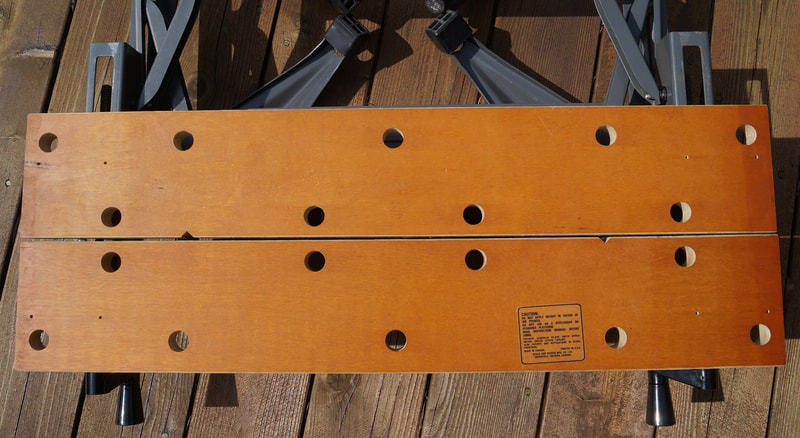


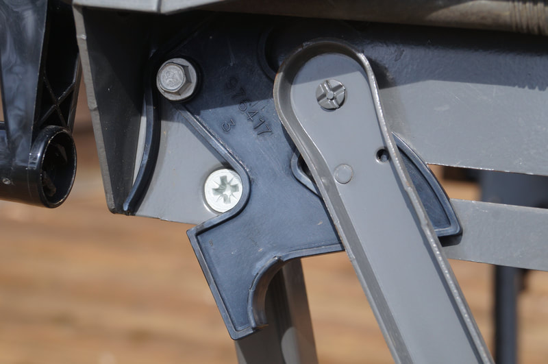

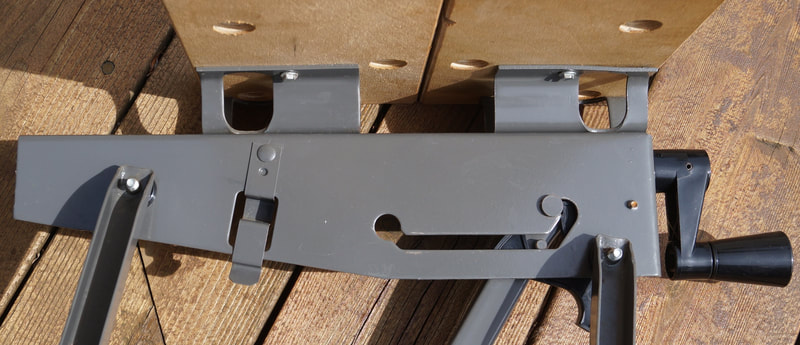

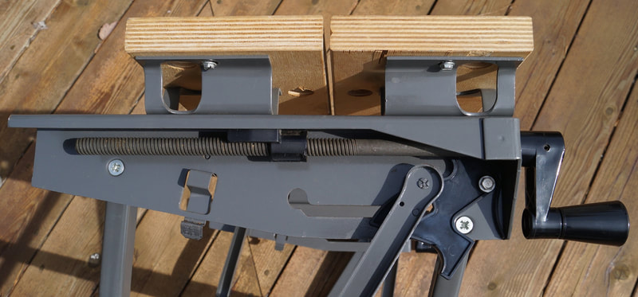

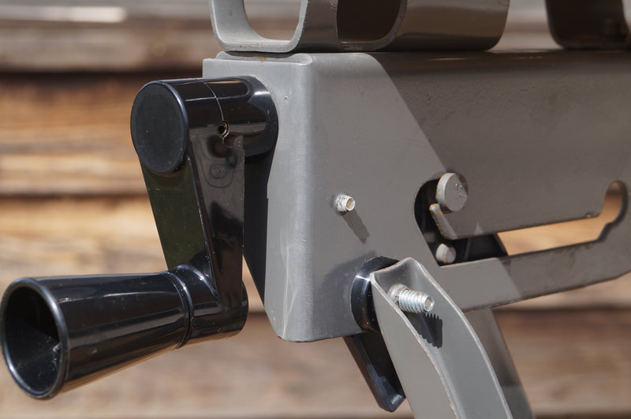


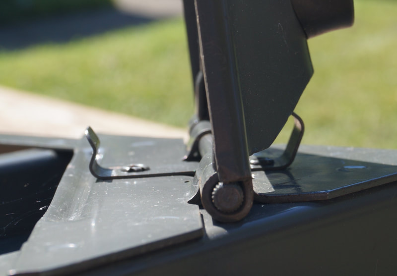


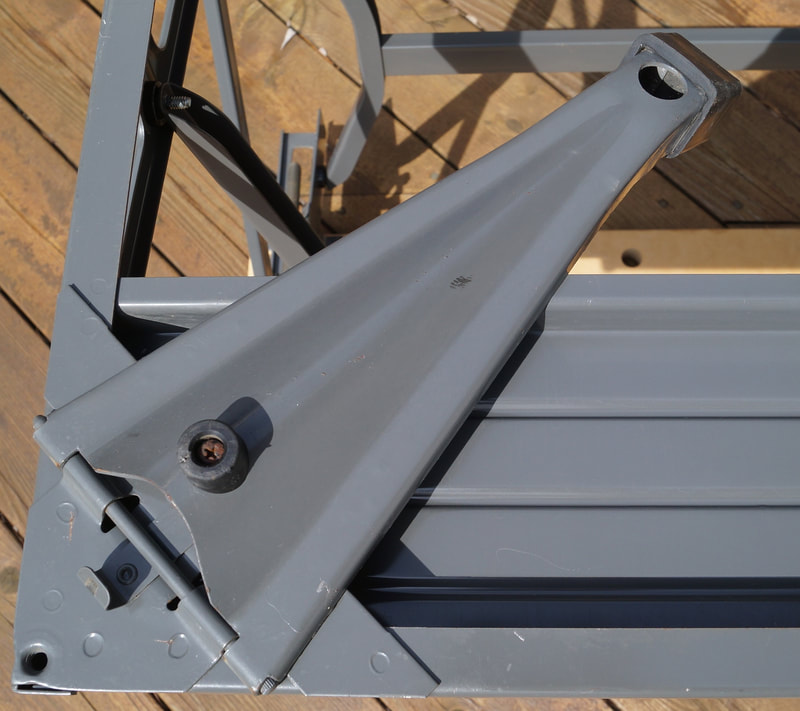

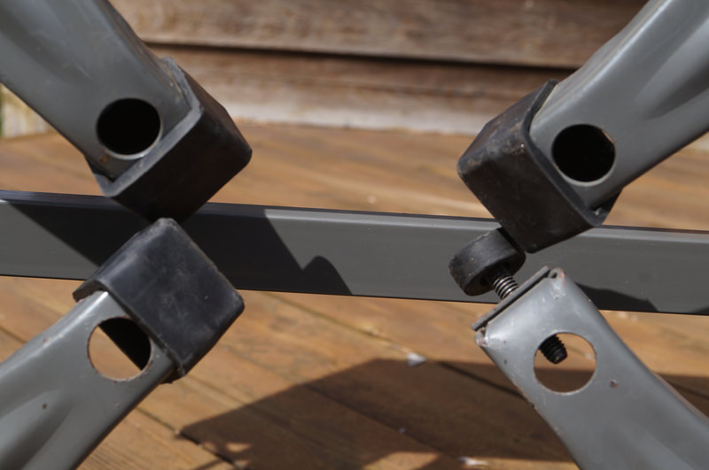

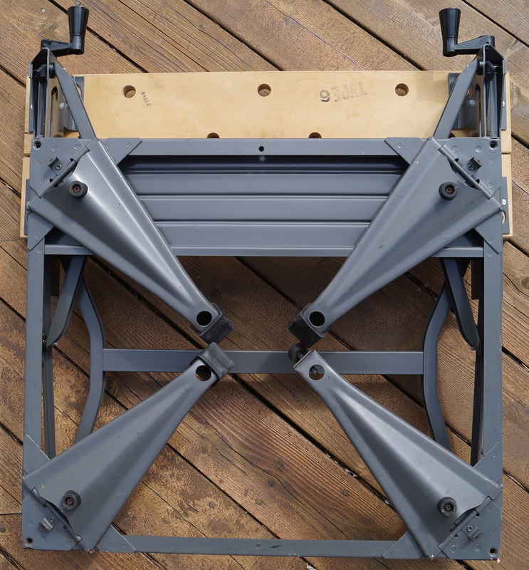

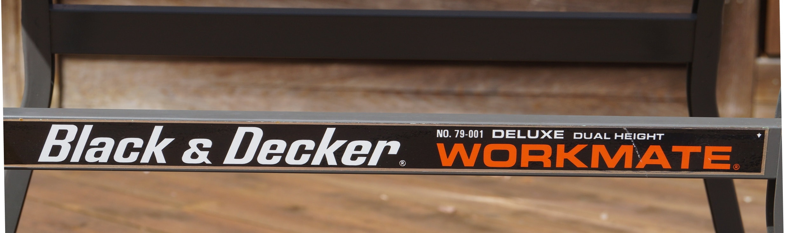


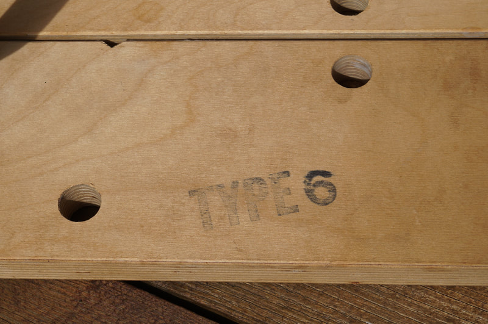

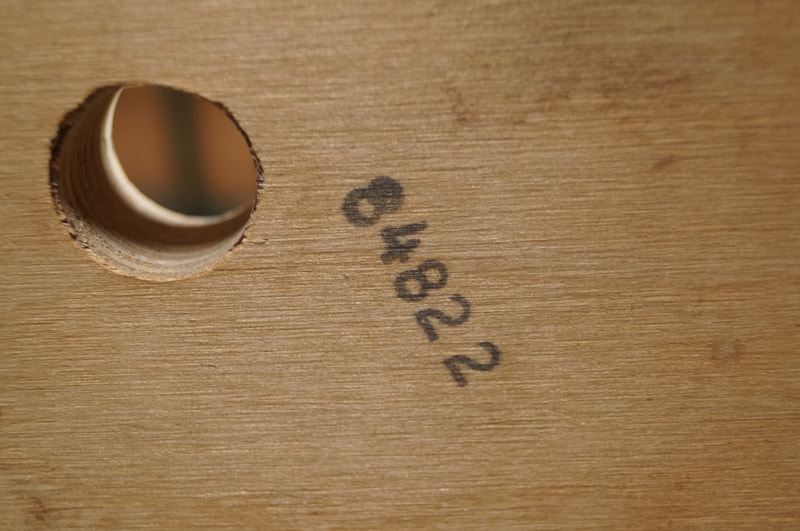

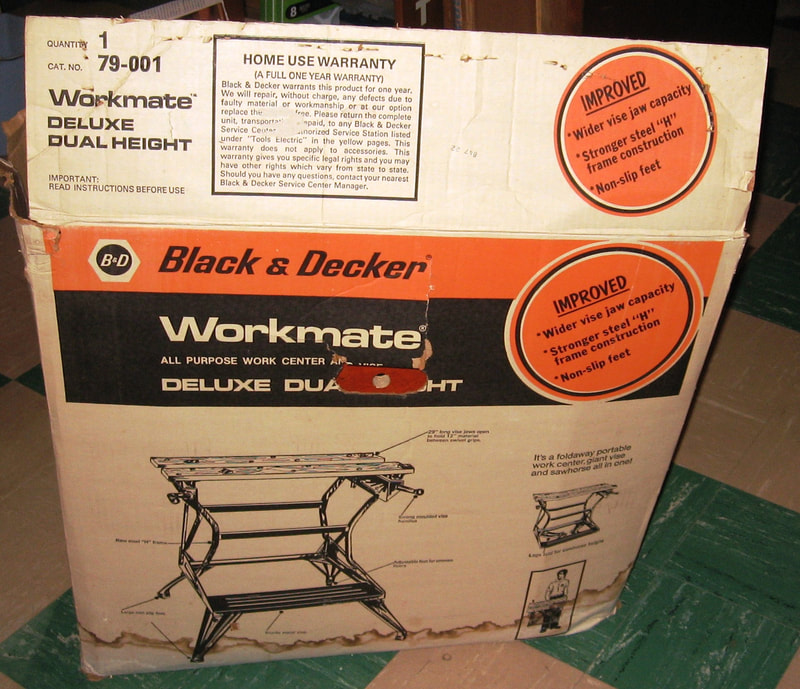